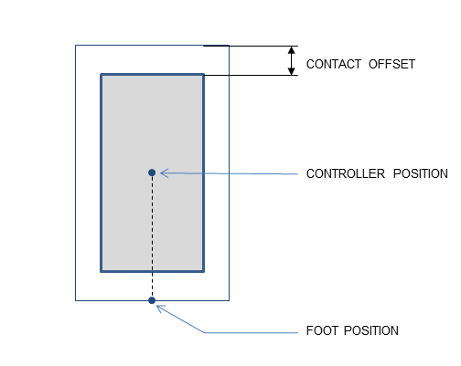
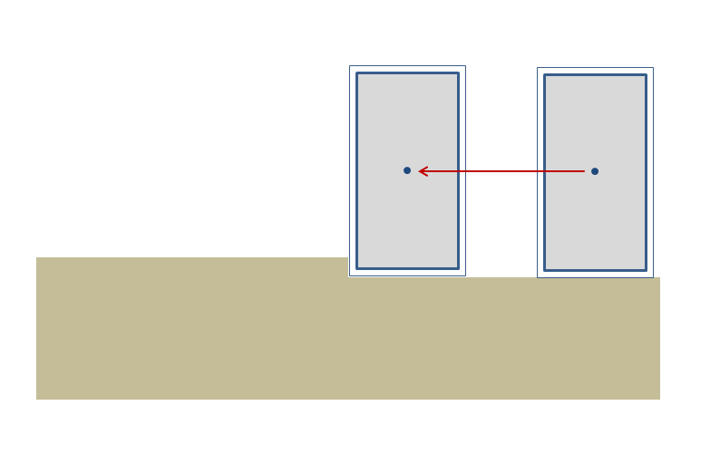
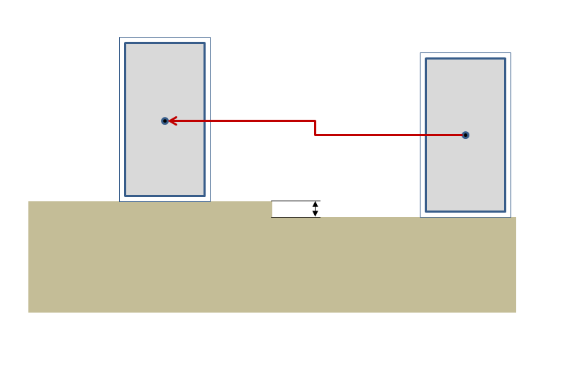
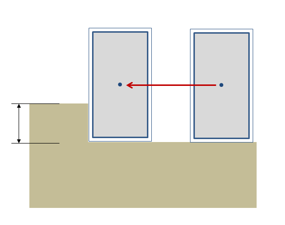
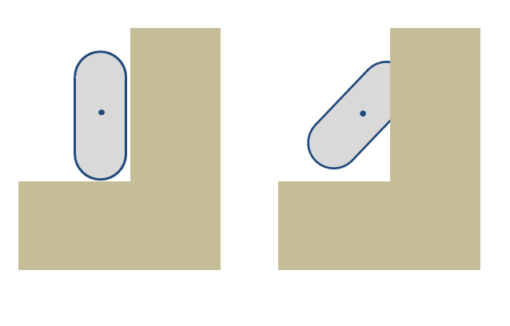
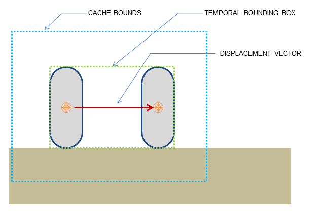
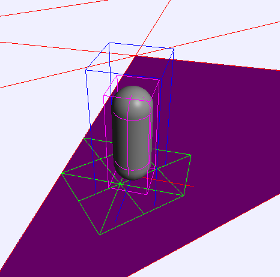

The character controller (CCT) SDK is an external component built on top of the PhysX SDK, in a manner similar to PhysXExtensions.
CCTs can be implemented in a number of ways: the PhysX implementation in the CCT module is only one of them.
By nature, CCTs are often very game-specific, and they can have a number of unique features in each game. For example the character's bounding volume may be a capsule in one game, and an inverted pyramid in another. The CCT SDK does not attempt to provide a one-size-fits-all solution that would work out-of-the-box for all possible games. But it provides the basic features common to all CCTs: character control and character interactions. It is a default starting point for users, a strong base that one can build on, and later modify or customize if needed.
The PhysX CCT is a kinematic controller. Traditionally, character controllers can be either kinematic or dynamic. A kinematic controller directly works with input displacement vectors (1st order control). A dynamic controller works with input velocities (2nd order control) or forces (3rd order control).
In the past, games did not use a 'real' physics engine like the PhysX SDK. But they still used a character controller to move a player in a level. These games, such as Quake or even Doom, had a dedicated, customized piece of code to implement collision detection and response, which was often the only piece of physics in the whole game. It actually had little physics, but a lot of carefully tweaked values to provide a good feeling while controlling the player. The particular behavior it implemented is often called the 'collide and slide' algorithm, and it has been 'tweaked for more than a decade'. The PhysX CCT module is an implementation of such an algorithm, providing a robust and well-known behavior for character control.
The main advantage of kinematic controllers is that they do not suffer from the following issues, which are typical for dynamic controllers:
(lack of) continuous collision detection: typical physics engines use discrete collision checks, leading to the notorious 'tunneling effect' that has plagued various commercial & non-commercial physics packages for years. This leads to three main problems:
- the tunneling effect itself : if the character goes too fast it might tunnel through a wall
- as a consequence, the character's maximum velocity be limited (thus also limiting the game play possibilities)
- even if it does not tunnel, the character might jitter when pushed forward in a corner for example, because the physics engine keeps moving it back and forth to slightly different positions.
No direct control: a rigid body is typically controlled with impulses or forces. It is usually not possible to move it directly to its final position: instead one must convert the delta position vector to impulses/forces, apply them, and hope that the character will end up at the desired position. This does not always work well, in particular when the physics engine uses an imperfect linear solver.
Trouble with friction: when the character is standing on a ramp, it should not slide. So infinite friction is needed here. When the character is moving forward on that same ramp, it should not slow down. One does not need any friction here. Similarly, when the character is sliding against a wall, it should not slow down either. Thus, for a CCT, friction is usually either 0 or infinite. Unfortunately the friction model in a physics engine might not be perfect, and it is easy to end up with either a small amount of friction (the character slows down a tiny bit) or a very-large-but-not-infinite friction (the character slides very slowly on that ramp no matter how artificially big the friction parameters are). The conflicting requirements for ramps also mean that usually there is simply no way to perfectly model desired behavior.
Trouble with restitution: typically, restitution should be avoided for CCTs. When the character moves fast and collides with a wall, it should not bounce away from it. When the character falls from a height and lands on the ground, flexing his legs, any bounce should be prevented. But once again, even when the restitution is exactly zero, a physics engine can nonetheless make the CCTs bounce a bit. This is not only related to the imperfect nature of the linear solver, it also has to do with how typical penetration-depth-based engines recover from overlap situations, sometimes applying excessive forces that separate the objects too much.
Undesired jumps: characters must often stick to the ground, no matter what the physical behavior should be. For example characters in action games tend to move fast, at unrealistic speeds. When they reach the top of a ramp, the physics engine often makes them jump a bit, in the same way a fast car would jump in the streets of San Francisco. But that is often not the desired behavior: instead the character should often stick to the ground regardless of its current velocity. This is sometimes implemented using fixed joints, but this is an unnecessarily complex solution to a problem that is easily prevented with kinematic controllers.
Undesired rotations: a typical character is always standing up and never rotating. However physics engines often have poor support for that sort of constraints, and a great deal of effort is often put into preventing a capsule around the character from falling (it should always stands up on its tip). This is often implemented using artificial joints, and the resulting system is neither very robust nor very fast.
To summarize, a lot of effort can be spent on tweaking and disabling the physics engine's features simply to emulate what is otherwise a much less complex piece of custom code. It is natural to instead keep using that simple piece of custom code.
First, create a controller manager somewhere in your application. This object keeps track of all created controllers and allows characters from the same manager to interact with each other. Create the manager using the PxCreateControllerManager function:
PxScene* scene; // Previously created scene
PxControllerManager* manager = PxCreateControllerManager(*scene);
Then, create one controller for each character in the game. At the time of writing only boxes (PxBoxController) and capsules (PxCapsuleController) are supported. A capsule controller for example, is created this way:
PxCapsuleControllerDesc desc;
...
<fill the descriptor here>
...
PxController* c = manager->createController(desc);
The manager class will keep track of all created controllers. They can be retrieved at any time using the following functions:
PxU32 PxControllerManager::getNbControllers() const = 0;
PxController* PxControllerManager::getController(PxU32 index) = 0;
To release a character controller, simply call its release function:
void PxController::release() = 0;
To release all created character controllers at once, either release the manager object itself, or use the following function if you intend to keep using the manager:
void PxControllerManager::purgeControllers() = 0;
The creation of a controller manager and its subsequent controllers is illustrated in SampleBridges.
Ideally, character should not be created in an initial overlap state, i.e. they should be created in a position where they do not overlap the surrounding geometry. The various PxScene overlap functions can be used to check the desired volume of space is empty, prior to creating the character. By default the CCT module does not check for overlaps itself, and creating a character that initially overlaps the world's static geometry can have undesired and undefined behavior - like the character going through the ground for example.
However, the overlap recovery module can be used to automatically correct the character's initial position. As long as the amount of overlap is reasonable, the recovery module should be able to relocate the character to a proper, collision-free position.
The overlap recovery module can be useful in several other situations. There are three main cases:
When activated, the CCT module will automatically try to resolve the penetration, and move the CCT to a safe place where it does not overlap other objects anymore. This only concerns static objects, dynamic objects are ignored by this module.
Enable or disable the overlap recovery module with this function:
void PxControllerManager::setOverlapRecoveryModule(bool flag);
By default the character controllers use precise sweep tests, whose accuracy is usually enough to avoid all penetration - provided the contact offset is not too small. Thus, in most cases the overlap recovery module is not needed. When it is used though, the sweep tests can be switched to less accurate but potentially faster versions, using the following function:
void PxControllerManager::setPreciseSweeps(bool flag);
The character uses a bounding volume that is independent from already existing shapes in the SDK. We currently support two different shapes around the character:
Note: versions prior to 2.3 also supported a sphere. This has been removed since the PxCapsuleController is more robust and provides the same functionality (zero length capsule).
A small skin is maintained around the character's volume, to avoid numerical issues that would otherwise happen when the character touches other shapes. The size of this skin is user-defined. When rendering the character's volume for debug purpose, remember to expand the volume by the size of this skin to get accurate debug visualization. This skin is defined in PxControllerDesc::contactOffset and later available through the PxController::getContactOffset() function.
Sometimes it is useful to change the size of the character's volume at runtime. For example if the character can crouch, it might be required to reduce the height of its bounding volume so that it can then move to places he could not reach otherwise.
For the box controller, the related functions are:
bool PxBoxController::setHalfHeight(PxF32 halfHeight) = 0;
bool PxBoxController::setHalfSideExtent(PxF32 halfSideExtent) = 0;
bool PxBoxController::setHalfForwardExtent(PxF32 halfForwardExtent) = 0;
And for the capsule controller:
bool PxCapsuleController::setRadius(PxF32 radius) = 0;
bool PxCapsuleController::setHeight(PxF32 height) = 0;
Changing the size of a controller using the above functions does not actually change its position. So if the character is standing on the ground (touching it), and its height is suddenly reduced without updating its position, the character will end up levitating above the ground for a few frames until gravity makes it fall and touch the ground again. This happens because the controllers positions are located at the center of the shapes, rather than the bottom. Thus, to modify a controller's height and preserve its bottom position, one must change both the height and position of a controller. The following helper function does that automatically:
void PxController::resize(PxF32 height) = 0;
It is important to note that volumes are directly modified without any extra tests, and thus it might happen that the resulting volume overlaps some geometry nearby. For example when resizing the character to leave a crouch pose, i.e. when the size of the character is increased, it is important to first check that the character can indeed 'stand up': the volume of space above the character must be empty (collision free). It is recommended to use the various PxScene overlap queries for this purpose:
bool PxScene::overlap(...) = 0;
Updating the character's volume at runtime to implement a 'crouch' motion is illustrated in SampleNorthPole. Using overlap queries to leave the crouch pose is done in the SampleNorthPole::tryStandup() function.
The heart of the CCT algorithm is the function that actually moves characters around:
PxControllerCollisionFlags collisionFlags =
PxController::move(const PxVec3& disp, PxF32 minDist, PxF32 elapsedTime,
const PxControllerFilters& filters, const PxObstacleContext* obstacles=NULL);
disp is the displacement vector for current frame. It is typically a combination of vertical motion due to gravity and lateral motion when your character is moving. Note that users are responsible for applying gravity to characters here.
minDist is a minimal length used to stop the recursive displacement algorithm early when remaining distance to travel goes below this limit.
elapsedTime is the amount of time that passed since the last call to the move function.
filters are filtering parameters similar to the ones used in the SDK. Use these to control what the character should collide with.
obstacles are optional additional obstacle objects with which the character should collide. Those objects are fully controlled by users and do not need to have counterpart SDK objects. Note that touched obstacles are cached, meaning that the cache needs to be invalidated if the collection of obstacles changes.
collisionFlags is a bit mask returned to users to define collision events that happened during the move. This is a combination of PxControllerCollisionFlag flags. It can be used to trigger various character animations. For example your character might be falling while playing a falling idle animation, and you might start the land animation as soon as PxControllerCollisionFlag::eCOLLISION_DOWN is returned.
It is important to understand the difference between PxController::move and PxController::setPosition. The PxController::move function is the core of the CCT module. This is where the aforementioned 'collide-and-slide' algorithm takes place. So the function will start from the CCT's current position, and use sweep tests to attempt to move in the required direction. If obstacles are found, it may make the CCT slide smoothly against them. Or the CCT can get blocked against a wall: the result of the move call depends on the surrounding geometry. On the contrary, PxController::setPosition is a simple 'teleport' function that will move the CCT to desired position no matter what, regardless of where the CCT starts from, regardless of surrounding geometry, and even if the required position is in the middle of another object.
Both PxController::move and PxController::setPosition are demonstrated in SampleBridges.
Each frame, after PxController::move calls, graphics object must be kept in sync with the new CCT positions. Controllers' positions can be accessed using:
const PxExtendedVec3& PxController::getPosition() const;
This function returns the position from the center of the collision shape, since this is what is used internally both within the PhysX SDK and by usual graphics APIs. Retrieving this position and passing it to the renderer is illustrated in SampleBridges. Note that the position uses double-precision, to make the CCT module work well with large worlds. Also note that a controller never rotates so you can only access its position.
Alternative helper functions are provided to work using the character's bottom position, a.k.a. the foot position:
const PxExtendedVec3& PxController::getFootPosition() const;
bool PxController::setFootPosition(const PxExtendedVec3& position);
Note that the foot position takes the contact offset into account.
Without auto-stepping it is easy for a box-controlled character to get stuck against slight elevations of the ground mesh. In the following picture the small step would stop the character completely. It feels unnatural because in the real world a character would just cross this small obstacle without thinking about it.
This is what auto-stepping enables us to do. Without any intervention from the player (i.e. without them thinking about it) the box correctly steps above the minor obstacle.
However, if the obstacle is too big, i.e. its height is greater than the stepOffset parameter, the controller cannot climb automatically, and the character gets stuck (correctly this time):
'Climbing' (over this bigger obstacle, for example) may also be implemented in the future, as an extension of auto-stepping. The step offset is defined in PxControllerDesc::stepOffset and later available through the PxController::getStepOffset() function.
Generally speaking, the step offset should be kept as small as possible.
The auto-stepping feature was originally intended for box controllers, which are easily blocked by small obstacles on the ground. Capsule controllers, thanks to their rounded nature, do not necessarily need the feature.
Even with a step offset of 0.0, capsules are able to go over small obstacles since their rounded bottom produces an upward motion after colliding with a small obstacle.
Capsules with a non-zero step-offset can go over obstacles higher than the step offset, because of the combined effect of the auto-stepping feature and their rounded shape. In this case the largest altitude a capsule can climb over is difficult to predict, as it depends on the auto-step value, the capsule's radius, and even the magnitude of the displacement vector.
This is why there are two different climbing modes for capsules:
In order to implement the auto-stepping feature, the SDK needs to know about the 'up' vector. The up vector is defined in PxControllerDesc::upDirection and later available through the PxController::getUpDirection() function.
The up vector does not need to be axis-aligned. It can be arbitrary, modified each frame using the PxController::setUpDirection() function, allowing the character to navigate on spherical worlds. This is demonstrated in SampleCustomGravity.
Modifying the up vector changes the way the CCT library sees character volumes. For example a capsule is defined by a PxCapsuleControllerDesc::height, which is the 'vertical height' along the up vector. Thus, changing the up vector effectively rotates the capsule from the point of view of the library. The modification happens immediately, without tests to validate that the character does not overlap nearby geometry. It is then possible for the character to be penetrating some geometry right after the call. Using the overlap recovery module is recommended to solve these issues.
In the above picture the capsule on the left uses a vertical up vector and does not collide with the surrounding geometry. On the right the up vector has been set to 45 degrees, and the capsule now penetrates the wall nearby. For most applications the up vector will be constant, and the same for all characters. These issues will only appear for characters navigating in spherical worlds (e.g. planetoids, etc).
By default the characters can move everywhere. This may not always be a good thing. In particular, it is often desired to prevent walking on polygons whose slope is steep. The SDK can do this automatically thanks to a user-defined slope limit. All polygons whose slope is higher than the limit slope will be marked as non walk-able, and the SDK will not let characters go there.
Two modes are available to define what happens when touching a non walk-able part. The desired mode is selected with the PxControllerDesc::nonWalkableMode enum:
The slope limit is defined in PxControllerDesc::slopeLimit and later available through the PxController::getSlopeLimit() function. The limit is expressed as the cosine of desired limit angle. For example this uses a slope limit of 45 degrees:
slopeLimit = cosf(PxMath::degToRad(45.0f));
Using slopeLimit = 0.0f automatically disables the feature (i.e. characters can go everywhere).
This feature is not always needed. A common strategy is to disable it and place invisible walls in the level, to restrict player's movements. The character module can also create those walls for you, if PxControllerDesc::invisibleWallHeight is non-zero. In this case the library creates those extra triangles on the fly, and that parameter controls their height (extruded in the user-defined up direction). A common problem is that those invisible walls are only created when non-walkable triangles are found. It is possible for a jumping character to go over them, if its bounding volume is too small and does not collide with the non-walkable triangles below him. The PxControllerDesc::maxJumpHeight parameter addresses this issue, by extending the size of the bounding volume downward. That way all potentially non-walkable triangles are properly returned by the collision queries, and invisible walls are properly created - preventing the character from jumping on them.
A known limitation is that the slope limit mechanism is currently only enabled against static objects. It is not enabled against dynamic objects, and in particular against kinematic objects. It is also not supported for static spheres or static capsules.
Sometimes it is convenient to create additional obstacles for the CCT to collide with, without creating an actual SDK object. This is useful in a number of situations. For example:
At the time of writing the character controller supports box and capsule PxObstacle objects, namely PxBoxObstacle and PxCapsuleObstacle. To create those, first create a PxObstacleContext object using the following function:
PxObstacleContext* PxControllerManager::createObstacleContext() = 0;
Then manage obstacles with:
ObstacleHandle PxObstacleContext::addObstacle(const PxObstacle& obstacle) = 0;
bool PxObstacleContext::removeObstacle(ObstacleHandle handle) = 0;
bool PxObstacleContext::updateObstacle(ObstacleHandle handle, const PxObstacle& obstacle) = 0;
Typically updateObstacle is called right before the controllers' move calls.
Using obstacles for moving platforms is illustrated in SampleBridges, when PLATFORMS_AS_OBSTACLES is defined in SampleBridgesSettings.h.
The PxUserControllerHitReport object is used to retrieve some information about controller's evolution. In particular, it is called when a character hits a shape, another character, or a user-defined obstacle object.
When the character hits a shape, the PxUserControllerHitReport::onShapeHit callback is invoked - for both static and dynamic shapes. Various impact parameters are sent to the callback, and they can then be used to do various things like playing sounds, rendering trails, applying forces, and so on. The use of PxUserControllerHitReport::onShapeHit is illustrated in SampleBridges. Note that this callback will only be called in response to a character moving against a shape. It will not be called if a (dynamic) shape collides against an otherwise non-moving character. In other words, this will only be called during a PxController::move call.
When the character hits another character, i.e. another object controlled by a character controller, the PxUserControllerHitReport::onControllerHit callback is invoked. This happens when the player collides with an NPC, for example.
Finally, when the character hits a user-defined obstacle the PxUserControllerHitReport::onObstacleHit callback is invoked.
The PxControllerBehaviorCallback object is used to customize the character's behavior after touching a PxShape, a PxController, or a PxObstacle. This is done using the following functions:
PxControllerBehaviorFlags PxControllerBehaviorCallback::getBehaviorFlags
(const PxShape& shape, const PxActor& actor) = 0;
PxControllerBehaviorFlags PxControllerBehaviorCallback::getBehaviorFlags
(const PxController& controller) = 0;
PxControllerBehaviorFlags PxControllerBehaviorCallback::getBehaviorFlags
(const PxObstacle& obstacle) = 0;
At the time of writing the following returned flags are supported:
PxControllerBehaviorFlag::eCCT_CAN_RIDE_ON_OBJECT defines if the character can effectively travel with the object it is standing on. For example a character standing on a dynamic bridge should follow the motion of the PxShape it is standing on (e.g. in SampleBridges). But it should not be the case if the character stands on, say a PxShape bottle rolling on the ground (e.g. the snowballs in SampleNorthPole). Note that this flag only controls the horizontal displacement communicated from an object to the controller. The vertical motion is something slightly different, as many factors contribute to this displacement: the step offset used to automatically walk over small bumps, the vertical motion of underlying dynamic actors like e.g. the bridges in SampleBridges, which should probably always been taken into account, etc.
PxControllerBehaviorFlag::eCCT_SLIDE defines if the character should slide or not when standing on the object. This can be used as an alternative to the previously discussed slope limit feature, to define non walk-able objects rather than non-walkable parts. It can also be used to make a capsule character fall off a platform's edge automatically, when the center of the capsule crosses the platform's edge.
PxControllerBehaviorFlag::eCCT_USER_DEFINED_RIDE simply disables all built-in code related to controllers riding on objects. This can be useful to get the legacy behavior back, which can sometimes be necessary when porting to PhysX 3.x a piece of code built around the PhysX 2.x character controller. The flag simply skips the new codepath, and lets users deal with this particular problem in their own application, outside of the CCT library.
The behavior callback is demonstrated in SampleBridges.
It is tempting to let the physics engine push dynamic objects by applying forces at contact points. However it is often not a very convincing solution.
The bounding volumes around characters are artificial (boxes, capsules, etc) and invisible, so the forces computed by the physics engine between a bounding volume and its surrounding objects will not be realistic anyway. They will not properly model the interaction between an actual character and these objects. If the bounding volume is large compared to the visible character, maybe to make sure that its limbs never penetrate the static geometry around, the dynamic objects will start moving (pushed by a bounding volume) before the actual character touches them - making it look like the character is surrounded by some kind of force field.
Additionally, the pushing effect should not change when switching from a box controller to a capsule controller. It should ideally be independent from the bounding volume.
Pushing effects are usually dictated by gameplay, and sometimes require extra code like inverse kinematic solvers, which are outside of the scope of the CCT module. Even for simple use cases, it is for example difficult to push a dynamic box forward with a capsule controller: since the capsule never hits the box exactly in the middle, applied force tends to rotate the box - even if gameplay dictates that it should move in a straight line.
Thus, this is an area where the CCT module should best be coupled to specific game code, to implement a specific solution for a specific game. This coupling can be done in many different ways. For simple use cases it is enough to use the PxUserControllerHitReport::onShapeHit callback to apply artificial forces to surrounding dynamic objects. Such an approach is illustrated in SampleBridges.
Note that the character controller does use overlap queries to determine which shapes are nearby. Thus, SDK shapes that should interact with the characters (e.g. the objects that the character should push) must have the PxShapeFlag::eSCENE_QUERY_SHAPE flag set to true, otherwise the CCT will not detect them and characters will move right through these shapes.
The interactions between CCTs (i.e. between two PxController objects) are limited, since in this case both objects are effectively kinematic objects. In other words their motion should be fully controlled by users, and neither the PhysX SDK nor the CCT module should be allowed to move them.
The PxControllerFilterCallback object is used to define basic interactions between characters. Its PxControllerFilterCallback::filter function can be used to determine if two PxController objects should collide at all with each other:
bool PxControllerFilterCallback::filter(const PxController& a, const PxController& b) = 0;
To make CCTs always collide-and-slide against each other, simply return true.
To make CCTs always move freely through each other, simply return false.
Otherwise, customized and maybe gameplay-driven filtering rules can be implemented in this callback. Sometimes the filtering changes at runtime, and two characters might be allowed to go through each other only for a limited amount of time. When that limited time expires, the characters may be left in an overlapping state until they separate and move again towards each other. To automatically separate overlapping characters, the following function can be used:
void PxControllerManager::computeInteractions(PxF32 elapsedTime,
PxControllerFilterCallback* cctFilterCb=NULL) = 0;
This function is an optional helper to properly resolve overlaps between characters. It should be called once per frame, before the PxController::move calls. The function will not move the characters directly, but it will compute overlap information for each character that will be used in the next PxController::move call.
Actors used internally by the CCT library follow the same rules as any other PhysX objects. In particular, they are updated using fixed or variable timesteps. This can be troublesome because the PxController objects are otherwise often updated using variable time steps (typically using the elapsed time between two rendering frames).
Thus the PxController objects (using variable time steps) may not always be perfectly in sync with their kinematic actors (using fixed time steps). This phenomenon is shown in SampleBridges.
The CCT library caches the geometry around each character, in order to speed up collision queries. The temporal bounding box for a character is an AABB around the character's motion (it contains the character's volume at both its start and end position). The cached volume of space is determined by the size of the character's temporal bounding box, multiplied by a constant factor. This constant factor is defined for each character by PxControllerDesc::volumeGrowth. Each time a character moves, its temporal bounding box is tested against the cached volume of space. If the motion is fully contained within that volume of space, the contents of the cache are reused instead of regenerated through PxScene-level queries.
In PhysX 3.3 and above, those caches should be automatically invalidated when a cached object gets updated or removed. However it is also possible to manually flush those caches using the following function:
void PxController::invalidateCache();
Prior to deciding if a character will travel with the motion of an object that is touching the character, a number of tests are automatically performed to decide if the cached touched object remains valid. These automatic validity tests mean that in the following cases it is not strictly necessary to invalidate the cache:
If a cached touched object is no longer actually touching the character and it is desired that the character no longer travels with the motion of that cached object then it is necessary to invalidate the cache. This holds true if the pair have separated as a consequence of an updated global pose or modified geometry.
The CCT library is quite robust, but sometimes suffers from FPU accuracy issues when a character collides against large triangles. This can lead to characters not smoothly sliding against those triangles, or even penetrating them. One way to effectively solve these problems is to tessellate the large triangles at runtime, replacing them on-the-fly with a collection of smaller triangles. The library supports a built-in tessellation feature, enabled with this function:
void PxControllerManager::setTessellation(bool flag, float maxEdgeLength);
The first parameter enables or disables the feature. The second parameter defines the maximum allowed edge length for a triangle, before it gets tessellated. Obviously, a smaller edge length leads to more triangles being created at runtime, and the more triangles get generated, the slower it is to collide against them.
It is thus recommended to disable the feature at first, and only enable it if experiencing collision problems. When enabling the feature, it is recommended to use the largest possible maxEdgeLength that does fix encountered problems.
In the screenshot, the large magenta triangle on which the character is standing is replaced with the smaller green triangles by the tessellation module. The internal geometry cache is represented by the blue bounding box. Note that only the green triangles touching this volume of space are kept. Thus, the exact number of triangles produced by the tessellation code depends on both the maxEdgeLength parameter and the PxControllerDesc::volumeGrowth parameter.
This section introduces common solutions to common problems with the CCT library.